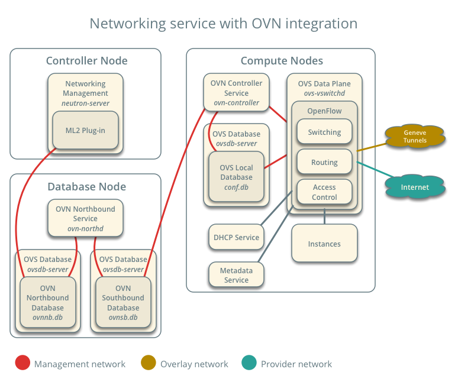
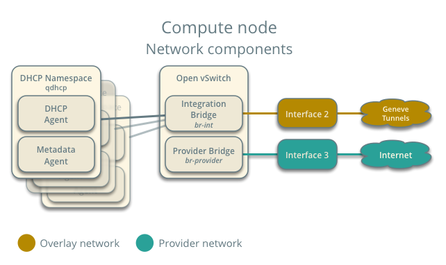

Reference architecture¶
The reference architecture defines the minimum environment necessary to deploy OpenStack with Open Virtual Network (OVN) integration for the Networking service in production with sufficient expectations of scale and performance. For evaluation purposes, you can deploy this environment using the Installation Guide or Vagrant. Any scaling or performance evaluations should use bare metal instead of virtual machines.
Layout¶
The reference architecture includes a minimum of four nodes.
The controller node contains the following components that provide enough functionality to launch basic instances:
- One network interface for management
- Identity service
- Image service
- Networking management with ML2 mechanism driver for OVN (control plane)
- Compute management (control plane)
The database node contains the following components:
- One network interface for management
- OVN northbound service (
ovn-northd) - Open vSwitch (OVS) database service (
ovsdb-server) for the OVN northbound database (ovnnb.db) - Open vSwitch (OVS) database service (
ovsdb-server) for the OVN southbound database (ovnsb.db)
Note
For functional evaluation only, you can combine the controller and database nodes.
The two compute nodes contain the following components:
- Three network interfaces for management, overlay networks, and provider networks
- Compute management (hypervisor)
- Hypervisor (KVM)
- OVN controller service (
ovn-controller) - OVS data plane service (
ovs-vswitchd) - OVS database service (
ovsdb-server) with OVS local configuration (conf.db) database - Networking DHCP agent
- Networking metadata agent
Note
By default, deploying DHCP and metadata agents on two compute nodes provides basic redundancy for these services. For larger environments, consider deploying the agents on a fraction of the compute nodes to minimize control plane traffic.
Networking service with OVN integration¶
The reference architecture deploys the Networking service with OVN integration as follows:
Each compute node contains the following network components:
Note
The Networking service creates a unique network namespace for each virtual subnet that enables the DHCP service.
Accessing OVN database content¶
OVN stores configuration data in a collection of OVS database tables. The following commands show the contents of the most common database tables in the northbound and southbound databases. The example database output in this section uses these commands with various output filters.
$ ovn-nbctl list Logical_Switch
$ ovn-nbctl list Logical_Switch_Port
$ ovn-nbctl list ACL
$ ovn-nbctl list Address_Set
$ ovn-nbctl list Logical_Router
$ ovn-nbctl list Logical_Router_Port
$ ovn-sbctl list Chassis
$ ovn-sbctl list Encap
$ ovn-nbctl list Address_Set
$ ovn-sbctl lflow-list
$ ovn-sbctl list Multicast_Group
$ ovn-sbctl list Datapath_Binding
$ ovn-sbctl list Port_Binding
$ ovn-sbctl list MAC_Binding
Note
By default, you must run these commands from the node containing the OVN databases.
Adding a compute node¶
When you add a compute node to the environment, the OVN controller service on it connects to the OVN southbound database and registers the node as a chassis.
_uuid : 9be8639d-1d0b-4e3d-9070-03a655073871
encaps : [2fcefdf4-a5e7-43ed-b7b2-62039cc7e32e]
external_ids : {ovn-bridge-mappings=""}
hostname : "compute1"
name : "410ee302-850b-4277-8610-fa675d620cb7"
vtep_logical_switches: []
The encaps field value refers to tunnel endpoint information
for the compute node.
_uuid : 2fcefdf4-a5e7-43ed-b7b2-62039cc7e32e
ip : "10.0.0.32"
options : {}
type : geneve
Security Groups/Rules¶
Each security group will map to 2 Address_Sets in the OVN NB and SB tables, one for ipv4 and another for ipv6, which will be used to hold ip addresses for the ports that belong to the security group, so that rules with remote_group_id can be efficiently applied.
OVN operations¶
Creating a security group will cause the OVN mechanism driver to create 2 new entries in the Address Set table of the northbound DB:
_uuid : 9a9d01bd-4afc-4d12-853a-cd21b547911d addresses : [] external_ids : {"neutron:security_group_name"=default} name : "as_ip4_90a78a43_b549_4bee_8822_21fcccab58dc" _uuid : 27a91327-636e-4125-99f0-6f2937a3b6d8 addresses : [] external_ids : {"neutron:security_group_name"=default} name : "as_ip6_90a78a43_b549_4bee_8822_21fcccab58dc"
In the above entries, the address set name include the protocol (IPv4 or IPv6, written as ip4 or ip6) and the UUID of the Openstack security group, dashes translated to underscores.
In turn, these new entries will be translated by the OVN northd daemon into entries in the southbound DB:
_uuid : 886d7b3a-e460-470f-8af2-7c7d88ce45d2 addresses : [] name : "as_ip4_90a78a43_b549_4bee_8822_21fcccab58dc" _uuid : 355ddcba-941d-4f1c-b823-dc811cec59ca addresses : [] name : "as_ip6_90a78a43_b549_4bee_8822_21fcccab58dc"
Networks¶
Routers¶
Note
Currently, OVN lacks support for routing between self-service (private) and provider networks. However, it supports routing between self-service networks.
Instances¶
Launching an instance causes the same series of operations regardless
of the network. The following example uses the provider provider
network, cirros image, m1.tiny flavor, default security
group, and mykey key.